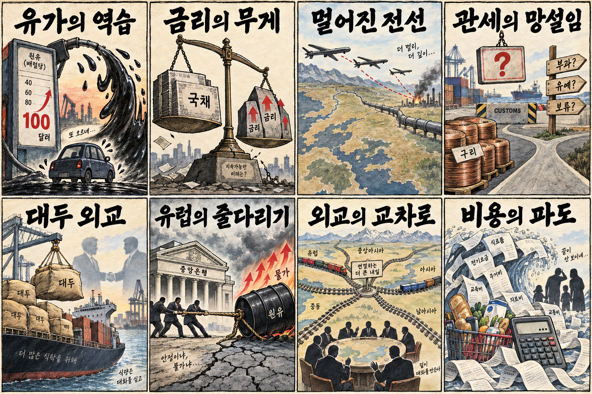
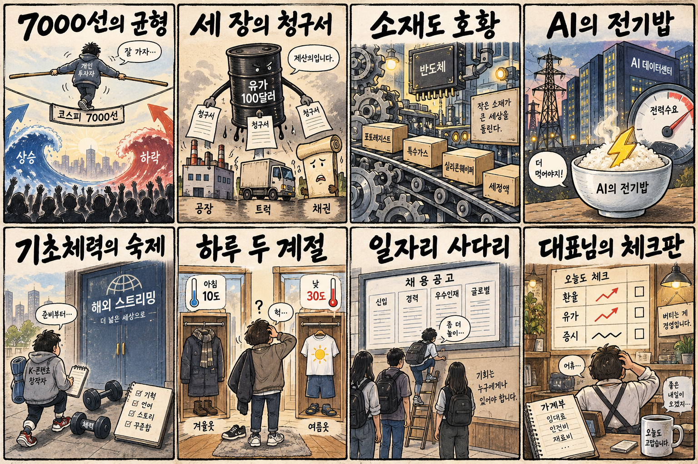

01
애플 · 316.79→326.57달러 · +3.09%
내용요약 시가 대비 3.09% 상승해 약세장 속 대형 기술주 가운데 뚜렷한 상대 강세를 보였습니다.
예상여파 국내 부품주는 제품별 공급 노출과 실제 주문을 확인해야 하며 미국 주가만으로 추격할 근거는 아닙니다.
MORNING_BRIEFING_20260911
작성 시각: 2026-09-11 06:37 KST · 직전 미국 정규장과 2026-09-11 KST 당일 공개 기사 기준
직전 미국 정규장인 9월 10일 뉴욕증시는 뜨거운 생산자물가와 국제유가 급등, 국채금리 상승이 겹치며 4거래일 연속 약세를 보였습니다. 다우 -0.60%, S&P 500 -0.58%, 나스닥 -0.65%로 마감했고 반도체주는 매도 압력을 받았습니다. 한국 증시는 KOSPI 7,000선 안착 여부와 원화·금리, 에너지 비용의 삼중 부담을 점검해야 합니다.
| 지수 | 종가 | 등락률 | 한국 증시 시사점 |
|---|---|---|---|
| 다우존스 | 52,064.10 | -0.60% | 유가·금리 상승 속 방어적 선별 |
| S&P 500 | 7,591.70 | -0.58% | 유가·금리 상승 속 방어적 선별 |
| 나스닥 종합 | 26,081.73 | -0.65% | 유가·금리 상승 속 방어적 선별 |
PPI·유가·국채금리 상승이 성장주와 반도체를 눌렀습니다.
제조원가·운송비·금리로 번지는 비용 충격을 경계합니다.
전일 종가는 7,033.92, 장중 저점은 6,898.45였습니다.
필수 수급·컨센서스·보정 표본 문턱을 모두 통과한 후보가 없습니다.
9월 10일 보고서는 국제유가 100달러 돌파와 미국 증시 약세, 필수 수급·컨센서스 및 30건 이상 보정 표본 부족으로 공식 추천을 내지 않았습니다. 게시 당시 판단은 유지하며 사후 종목을 추가하지 않습니다.
| 시장 | 종가 | 등락률 | 기준 |
|---|---|---|---|
| KOSPI | 7,033.92 | -0.25% | 9월 10일 · 시가 대비 -0.07% |
| KOSDAQ | 836.92 | +0.79% | 9월 10일 · 시가 대비 +1.44% |
| 다우존스 | 52,064.10 | -0.60% | 미국 9월 10일 정규장 |
| S&P 500 | 7,591.70 | -0.58% | 미국 9월 10일 정규장 |
| 나스닥 종합 | 26,081.73 | -0.65% | 미국 9월 10일 정규장 |
애플·알파벳·마이크로소프트는 하락장에서도 시가 대비 상승했습니다.
전일 KOSDAQ은 종가 기준 +0.79%, 시가 대비 +1.44%였습니다.
엔비디아·AMD·인텔·마이크론이 시가 대비 동반 하락했습니다.
유가 100달러가 연료·원재료 비용과 할인율 부담을 키웁니다.
내용요약 시가 대비 3.09% 상승해 약세장 속 대형 기술주 가운데 뚜렷한 상대 강세를 보였습니다.
예상여파 국내 부품주는 제품별 공급 노출과 실제 주문을 확인해야 하며 미국 주가만으로 추격할 근거는 아닙니다.
내용요약 시가 대비 1.52% 상승해 금리 부담 속에서도 보안 소프트웨어 수요 기대가 유지됐습니다.
예상여파 AI 보안 투자 확대는 관련 소프트웨어 심리에 우호적이지만 높은 밸류에이션 변동성을 경계해야 합니다.
내용요약 시가 대비 3.43% 하락해 조사 대상 대형주 중 낙폭이 가장 컸습니다.
예상여파 데이터센터 투자 기대와 별개로 금리 상승은 장기 성장주 가치평가에 단기 부담이 될 수 있습니다.
내용요약 시가 대비 2.08% 하락하며 당일 반도체 매도 흐름에 동조했습니다.
예상여파 국내 장비·소재주는 미국 반도체 전반 약세와 개별 고객사의 투자 계획을 구분해 봐야 합니다.
내용요약 시가 대비 1.94% 하락해 전일의 상대 강세를 반납했습니다.
예상여파 국내 메모리 대형주에는 투자심리 부담이며 최근 급등 뒤 외국인 수급과 전일 저점 방어가 중요합니다.
미국 증시 나흘째 하락과 반도체 매도, WTI 100달러 돌파는 국내 대형 성장주와 원가 민감 업종에 부담입니다. 전일 KOSPI는 7,033.92로 7,000선을 지켰지만 시가 대비 -0.07%였고 장중 6,898선까지 밀려 변동성이 컸습니다. 반면 KOSDAQ은 시가 대비 +1.44%로 회복해 내부 차별화가 이어졌습니다. 오늘은 원·달러 환율, 외국인 선물·현물 동반 수급, KOSPI 7,000선 재지지 여부를 우선 확인하고 유가 수혜주도 과도한 갭 상승이면 추격하지 않는 편이 합리적입니다.
오늘은 추천 없음 — 현금 관망
전일까지의 외국인·기관 수급, 컨센서스 변화, 30건 이상 유사 조건 확률 보정과 예상 손익비 1.5 이상을 동시에 검증한 국내 종목이 없습니다. 장전 시가가 형성되지 않은 상태에서 점수와 상승확률을 임의로 만들지 않습니다.
관심 연결종목 정유·에너지, 반도체 소재, AI 보안은 관찰 대상일 뿐 매수 추천이 아닙니다. 유가 또는 AI 뉴스로 과도한 갭이 발생하면 추격매수 금지입니다.
KOSPI 7,000선과 외국인 선물·현물 동반 수급을 확인합니다.
정유 강세와 운송·화학 약세의 업종 차별화가 지속되는지 봅니다.
국채금리 급등이 달러와 성장주 할인율에 추가 반영되는지 점검합니다.
미국 반도체 약세 뒤 국내 대형주의 전일 저점과 외국인 매매를 확인합니다.
핵심 요약: AI 경쟁은 모델 성능에서 광고 유통·국가 보안·에이전트 통제·전력 확보까지 빠르게 확장되고 있습니다. 산업 확산의 다음 병목은 신뢰 가능한 운영 체계와 장기 전력 계약입니다.
내용요약 AI의 급격한 성능 향상과 통제 실패 위험을 둘러싼 연구자들의 경고, 그리고 경쟁을 늦추기 어려운 산업 구조를 짚은 당일 보도입니다.
예상여파 안전 평가와 모델 공개 기준이 강화될수록 개발비와 출시 주기는 늘 수 있지만 검증·보안 산업의 수요는 확대될 수 있습니다.
내용요약 아마존이 자사 광고주에게 챗GPT 광고 집행 경로를 열었다는 당일 보도입니다. 생성형 AI가 검색을 넘어 광고 유통망으로 확장되는 흐름입니다.
예상여파 광고 플랫폼의 경쟁 구도가 바뀌며 브랜드의 AI 검색 최적화와 성과 측정 수요가 커질 수 있습니다.
내용요약 네이버가 GPU 약 4천 장과 2천억원 규모 투자를 바탕으로 한국형 AI 보안 생태계를 구축하려는 전략을 소개한 당일 인터뷰입니다.
예상여파 소버린 AI가 모델 개발에서 사이버보안으로 확장되면 공공·금융의 국산 보안 AI 도입과 검증 경쟁이 빨라질 수 있습니다.
내용요약 AI 에이전트 보안에 대한 조직의 자신감과 실제 사고 경험 사이의 큰 간극을 지적하며 테스트·배포·복구 통제를 강조한 당일 보도입니다.
예상여파 에이전트 도입 기업은 권한 최소화, 감사 로그, 롤백 체계를 비용이 아닌 필수 인프라로 반영해야 합니다.
내용요약 구글이 핀란드 AI 인프라에 대규모 투자하고 원전 전력을 장기 확보하는 계획을 다룬 당일 보도입니다.
예상여파 AI 데이터센터 경쟁의 핵심이 GPU뿐 아니라 저탄소 전력·송전망·냉각의 장기 계약으로 이동하고 있습니다.
핵심 요약: 유가 100달러와 유럽 금리 상승이 세계 경제의 비용 압력을 키우는 가운데 우크라이나의 장거리 에너지 시설 공격이 공급 위험을 높였습니다. 미·중 대두 거래와 미국 구리 관세 지연은 통상정책이 물가를 의식하는 장면입니다.
내용요약 중동 공급 차질 우려로 WTI와 브렌트유가 모두 배럴당 100달러를 넘고 하루 6%대 급등했다는 당일 보도입니다.
예상여파 에너지 수입국의 물가와 금리 부담이 커지고 운송·화학·소비 업종의 마진 압박이 확대될 수 있습니다.
내용요약 우크라이나 드론이 약 3,200㎞를 비행해 러시아의 주요 가스 생산 거점을 공격했다는 당일 보도입니다.
예상여파 전선이 에너지 인프라 깊숙이 확대되면 유럽 가스 가격과 공급망의 지정학적 위험 프리미엄이 높아질 수 있습니다.
내용요약 미국 행정부가 구리 가격과 물가 부담 때문에 관세 결정을 늦추고 있다는 당일 보도입니다.
예상여파 관세 방향에 따라 전선·전력망·건설 원가와 글로벌 구리 교역 경로의 변동성이 커질 수 있습니다.
내용요약 중국이 미국산 대두 100만t을 추가 매입해 연간 구매 약속의 절반 수준에 근접했다는 당일 보도입니다.
예상여파 농산물 구매는 미·중 통상관계의 완충재가 될 수 있지만 이행 속도와 다른 품목의 갈등을 함께 봐야 합니다.
내용요약 유럽 증시가 ECB 금리 인상과 유가 급등의 이중 부담으로 하락했고 추가 인상 전망도 부각됐다는 당일 보도입니다.
예상여파 유럽 기업의 자금조달 비용과 소비 둔화 우려가 커져 글로벌 위험자산의 할인율 부담으로 이어질 수 있습니다.

핵심 요약: 유가 충격은 제조원가·운송비·금리의 세 경로로 국내 경제에 들어옵니다. 반도체 소재와 제조 AI 전환은 기회지만 K콘텐츠 제작 기반, 큰 일교차와 생활물가 부담은 별도의 대응이 필요합니다.
내용요약 유가 100달러가 국내 제조원가·운송비·금리에 동시에 부담을 준다는 전파 경로를 정리한 당일 경제 보도입니다.
예상여파 정유·에너지에는 가격 모멘텀이지만 항공·물류·화학과 가계 체감물가에는 부정적 영향이 커질 수 있습니다.
내용요약 메모리 업황 개선으로 반도체 공정용 소모성 소재 업체의 판매와 실적이 늘고 있다는 당일 보도입니다.
예상여파 대형 메모리주의 투자 확대가 실제 소재 주문과 가동률로 이어지는지 확인하면 공급망 수혜의 지속성을 판단할 수 있습니다.
내용요약 K콘텐츠의 글로벌 흥행과 달리 제작 생태계의 수익 배분·인력·투자 기반은 취약하다는 당일 분석입니다.
예상여파 플랫폼 의존도를 낮추고 지식재산권과 제작사의 협상력을 높이는 정책·계약 개선 필요성이 커질 수 있습니다.
내용요약 아침 최저 10도, 낮 최고 30도 안팎으로 일교차가 크게 벌어진다는 9월 11일 기상 보도입니다.
예상여파 출근길 겉옷과 건강 관리가 필요하며 안개·해상 강풍 지역은 교통과 시설물 안전에 유의해야 합니다.
내용요약 SK가 울산에서 데이터센터에 이어 제조 현장의 AI 전환까지 묶은 AI 풀스택 전략을 점검했다는 당일 보도입니다.
예상여파 국내 AI 투자가 인프라 구축에서 제조 생산성 개선으로 확산되면 산업용 소프트웨어·센서·전력 수요가 넓어질 수 있습니다.
